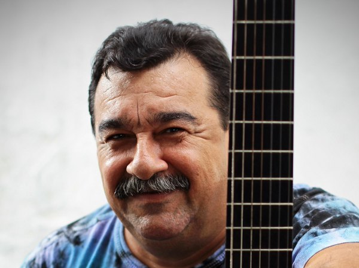

TARCÍSIO SARDINHA
Quase como uma extensão do braço, o violão praticamente não sai do colo de Tarcísio Sardinha. Pela morada de quintal largo e sombra boa, há vários deles espalhados. A coleção de instrumentos entra na casa da dezena. Isso sem contar os cavacos, bandolins e um piano. São anos e anos de uma relação estreita que vem desde moleque, quando o ainda Tarcísio de Lima Carvalho começou a refinar o ouvido para o chorinho de Altamiro Carrilho e Jacob do Bandolim que o avô ouvia na vitrola de casa. Influenciado pela família rodeada de músicos, por volta dos 10 anos, Tarcísio decidiu que queria também dedilhar cordas. O desejo virou um vício. “Eu chegava do colégio e não tirava nem a farda, ia direto pro violão”, lembra o hoje multi-instrumentista, compositor e arranjador de 49 anos, completados no último dia 14 de março. Sem professores nem partituras, Tarcísio se fez um exímio violonista apenas ouvindo – exaustivamente – os chorinhos e sambas repetidos na vitrola. Na época, não havia a facilidade de escolas de música nem internet e o jeito era aprender a “tirar de ouvido” nota por nota. Ouviu tanto que desenvolveu uma aptidão peculiar a grandes músicos da história, como Mozart e Heitor Villa-Lobos, que conseguiam identificar, em qualquer tipo de som, notas musicais. “Isso [falta de escola formal] foi bom pra mim porque eu desenvolvi essa minha parte auditiva. O pessoal por aqui diz que hoje eu tenho ouvido absoluto”, orgulha-se. Depois de esmiuçar o violão de seis cordas, Tarcísio partiu para o de sete, depois pulou para o bandolim, para o cavaquinho, guitarra, baixo e, de quebra, aprendeu a tocar piano. Começou a compor e a brincar sério de ser tocador. Com 15 anos, já com a carteira de músico nas mãos, participou do seu primeiro grupo profissional de chorinho, o Pixinguinha. Foi no tempo que um sargento-músico do Exército deu a ele o apelido de Sardinha, por ter o físico (à época, bem magro) e o talento parecido com o do violonista Aníbal Augusto Sardinha, mais conhecido como Garoto. De pouca idade mas com talento de gente grande, Sardinha conheceu a noite de Fortaleza tocando em bares e bandas de baile. Nela, ampliou o repertório e aprimorou seu dedilhado. Fez da boemia a sua grande escola musical. Até chegou a frequentar a Escola de Música da Paraíba para aprender a tocar violão clássico e ler partitura, mas nem chegou a terminar o curso. “A noite é que dá canja pra gente, quando a gente vai acompanhar artista de fora é café pequeno”, pontua. E desse café ele vem provando desde os 16 anos, quando subiu pela primeira vez ao palco do Theatro José de Alencar para acompanhar o cantor Sílvio Caldas, num show que, para ele, foi o mais marcante de sua carreira. “Eu conheci o Sílvio ali no camarim, mas foi um show maravilhoso”, relembra. Na base improviso como essa, já se somam outras incontáveis apresentações. Ele já perdeu as contas de quantas vezes subiu ao palco sem sequer ter visto o setlist do cantor que iria acompanhar. A capacidade de improviso de Sardinha, aliás, fez dele uma referência nacional entre instrumentistas. Depois de se firmar na cena local e tornar-se nome carimbado em discos de cearenses como Fagner e Belchior, a virtuose do baixinho de dedos ágeis ganhou fama Brasil afora e, até hoje, não há músico que chegue ao Ceará precisando de um instrumentista de cordas que não procure por ele. E isso não se restringe aos chorões e sambistas que aportam na Cidade. A escola da noite lhe deu a capacidade de acompanhar da lambada de Beto Barbosa ao samba-canção de Pery Ribeiro ou os forrós de Dominguinhos, com quem trabalhou durante nove anos, até recentemente, antes do músico adoecer. O único problema da fama de seu talento é a confiança excessiva dos produtores. “Eu sei que é um dom que Deus me deu, mas eu queria pelo menos um ensaio”, ri-se. Os amigos de longas datas ainda se admiram com a sua capacidade de dedilhar no improviso, mas ele tem a receita pronta o sucesso: “Eu brinco dizendo que tem que encarar o inimigo de frente. Você olha bem no fundo dos olhos dela (a cantora) e vai sentindo a melodia que dá certo”. Não à toa, hoje Sardinha é uma das principais referências para a nova geração de músicos e instrumentistas do Estado. Muitos dos talentos que circulam na cena local são crias suas e se fizeram violonistas através das aulas do autodidata que virou professor. Hoje mais dedicado a produzir discos e criar arranjos, o som de Sardinha anda raro de ser ouvido nos bares. Seus dedos têm se voltado a dedilhar nos estúdios, onde prepara o quarto disco da carreira (o quarto só dele, porque gravações em discos acompanhando outros músicos já passaram da centena). Mas Sardinha é um inquieto e não dá para se espantar se um dia encontrá-lo nos palcos de um show de rock. No entanto, melhor mesmo é rezar para vê-lo na sua praia, ou melhor, na informalidade de uma roda de samba ou de choro. Fonte: O Povo
“Eu chegava do colégio e não tirava nem a farda, ia direto pro violão” - Tarcísio Sardinha
Partituras
 Tarcísio Sardinha – Parafuso Drink's
Tarcísio Sardinha – Parafuso Drink's